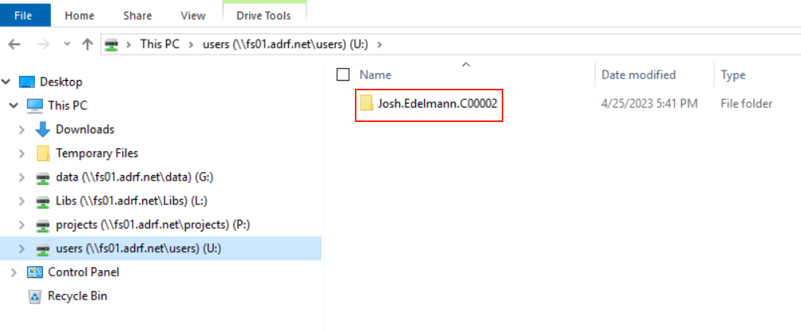
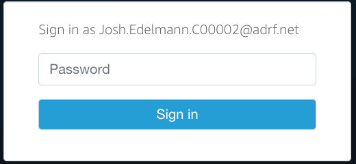
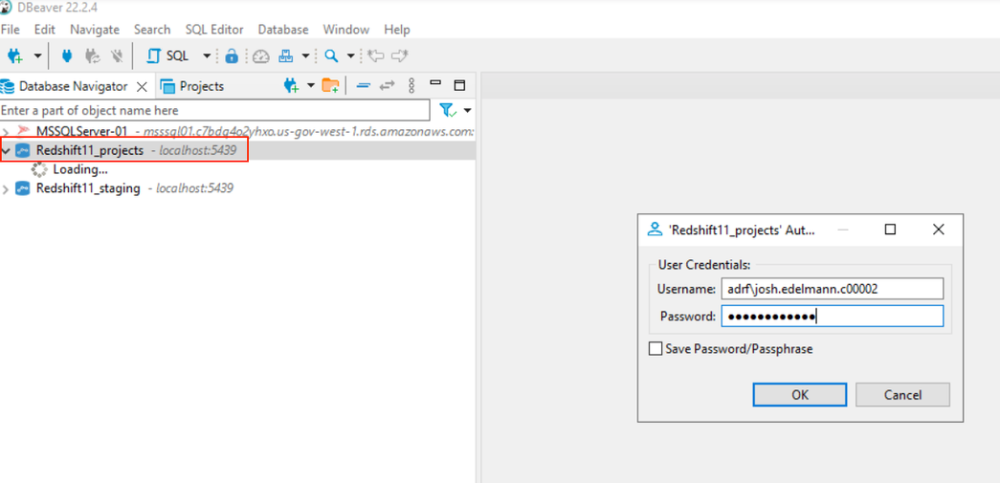

12 Redshift querying guide
Introduction
This document serves as an introduction to generating proficient Amazon Redshift queries. This is a generalized document meaning you will need to replace “schema_name” and “table_name” with the appropriate schema and table names used for your project.
Data Access
The data is housed in Redshift. You need to replace the “user.name.project” with your project based username. The project based username is your user folder name in the U:/ drive:

Note: Your username will be different than in these examples.
The password needed to access Redshift is the second password entered when logging into the ADRF as shown in the screen below:

All data is stored under schemas in the projects database and are accessible by the following programs:
- DBeaver
To establish a connection to Redshift in DBeaver, first double click on the server you wish to connect to. In the example below I’m connecting to Redshift11_projects. Then a window will appear asking for your Username and Password. This will be your user folder name and include adrf\ before the username. Then click OK. You will now have access to your data stored on the Redshift11_projects server.

Creating Tables in PR/TR Schema
When users create tables in their PR (Research Project) or TR (Training Project) schema, the table is initially permissioned to the user only. This is analogous to creating a document or file in your U drive: Only you have access to the newly created table.
If you want to allow all individuals in your project workspace to access the table in the PR/TR schema, you will need to grant permission to the table to the rest of the users who have access to the PR or TR schema.
You can do this by running the following code:
GRANT SELECT, UPDATE, DELETE, INSERT ON TABLE schema_name.table_name TO group db_xxxxxx_rw;
Note: In the above code example replace
schma_namewith thepr_ortr_schema assigned to your workspace and replacetable_namewith the name of the table on which you want to grant access. Also, in the group namedb_xxxxxx_rw, replacexxxxxxwith your project code. This is the last 6 characters in your project based user name. This will start with either aTor aP.
If you want to allow only a single user on your project to access the table, you will need to grant permission to that user. You can do this by running the following code:
GRANT SELECT, UPDATE, DELETE, INSERT ON TABLE schema_name.table_name to "IAM:first_name.last_name.project_code";
Note: In the above code example replace
schma_namewith thepr_ortr_schema assigned to your workspace and replacetable_namewith the name of the table on which you want to grant access. Also, in"IAM:first_name.last_name.project_code"updatefirst_name.last_name.project_codewith the user name to whom you want to grant access to.
If you have any questions, please reach out to us at support@coleridgeinitiative.org
When connecting to the database through SAS, R, Stata, or Python you need to use one of the following DSNs:
Redshift01_projects_DSN
Redshift11_projects_DSN
In the code examples below, the default DSN is Redshift01_projects_DSN.
- SAS Connection
proc sql;
connect to odbc as my con
(datasrc=Redshift01_projects_DSN user=adrf\user.name.project password=password);
select * from connection to mycon
(select * form projects.schema.table);
disconnect from mycon;
quit;- R Connection
Best practices for loading large amounts of data in R
To ensure R can efficiently manage large amounts of data, please add the following lines of code to your R script before any packages are loaded:
options(java.parameters = c("-XX:+UseConcMarkSweepGC", "-Xmx8192m")) gc()
Redshift R database connectivity Changes
When connecting to Redshift database using R (whether in R Studio or Jupyter Notebook), We strongly recommend that you use a JDBC based connection (versus using an ODBC based connection). Other than how you connect to database, rest of your code should remain the same.
Best practices for writing tables to Redshift
When writing tables to Redshift from R in either a SQL query or R data frame, please use the following lines of R code:
Writing a table from R to Redshift using SQL INTO statement use the function dbSendUpdate():
dbSendUpdate(conn, SELECT col_1 INTO schema_name.table_name FROM schema_name.old_table_name
When writing an R data frame to Redshift use the following code as an example:
qry <- "set search_path to schema_name"
dbSendUpdate(conn, qry)
dbWriteTable(
conn = conn, #name of the connection
name = 'table_name', #name of table to save df to
value = df_name, #name of df to write to Redshift
overwrite = TRUE #if you want to overwrite a current table, otherwise FALSEThe below table is for connecting to RedShift11 Database
| ODBC Based Connection | JDBC Based Connection(Recommended) | |
| Libraries | library(odbc) |
library(RJDBC) |
| User ID and Password |
|
|
|
||
| Connection | con <- dbConnect(odbc(),"Redshift11_projects_DSN",uid = "adrf\\John.doe.p00002", pwd = 'xxxxxxxxxxxxxx') |
conn <- dbConnect(driver, url, dbusr, dbpswd) |
For the above code to work, please create a file name .Renviron in your user folder (user folder is something like i.e. u:\ John.doe.p00002) And .Renviron file should contain the following:
DBUSER='adrf\John.doe.p00002'
DBPASSWD='xxxxxxxxxxxx'PLEASE replace user id and password with your project workspace specific user is and password.
This will ensure you don’t have your id and password in R code and then you can easily share your R code with others without sharing your ID and password.
The below table is for connecting to RedShift01 Database
ODBC Based Connection |
JDBC Based Connection (Recommended) | |
| Libraries | library(odbc) |
library(RJDBC) |
| User ID and Password | dbusr=Sys.getenv("DBUSER") dbpswd=Sys.getenv("DBPASSWD") |
|
|
||
| Connection | con <- dbConnect(odbc(), "Redshift11_projects_DSN", uid = "adrf\\John.doe.p00002", pwd = 'xxxxxxxxxxxxxx') |
|
For the above code to work, please create a file name .Renviron in your user folder (user folder is something like i.e. u:\ John.doe.p00002) And .Renviron file should contain the following:
DBUSER='adrf\John.doe.p00002’
DBPASSWD='xxxxxxxxxxxx'PLEASE replace user id and password with your project workspace specific user is and password.
This will ensure you don’t have your id and password in R code and then you can easily share your R code with others without sharing your ID and password.
- Python Connection
import pyodbc
import pandas as pd
cnxn = pyodbc.connect('DSN=Redshift01_projects_DSN;
UID = adrf\\user.name.project; PWD = password')
df = pd.read_sql(“SELECT * FROM projects.schema_name.table_name”, cnxn)- Stata Connection
odbc load, exec(“select * from PATH_TO_TABLE”) clear
dsn(“Redshift01_projects_DSN") user(“adrf\user.name.project) password(“password”)Redshift Query Guidelines for Researchers
Developing your query. Here’s an example workflow to follow when developing a query.
Study the column and table metadata, which is accessible via the table definition. Each table definition can be displayed by clicking on the [+] next the table name.
To get a feel for a table’s values, SELECT * from the tables you’re working with and LIMIT your results (Keep the LIMIT applied as you refine your columns) or use (e.g., select * from [table name] LIMIT 1000 )
Narrow down the columns to the minimal set required to answer your question.
Apply any filters to those columns.
If you need to aggregate data, aggregate a small number of rows
Once you have a query returning the results you need, look for sections of the query to save as a Common Table Expression (CTE) to encapsulate that logic.
DO and DON’T DO BEST PRACTICES:
Tip 1: Use SELECT <columns> instead of SELECT *
Specify the columns in the SELECT clause instead of using SELECT *. The unnecessary columns place extra load on the database, which slows down not just the single Amazon Redshift, but the whole system.
Inefficient
SELECT * FROM projects.schema_name.table_name
This query fetches all the data stored in the table you choose which might not be required for a particular scenario.
Efficient
SELECT col_A, col_B, col_C FROM projects.schema_name.table_name
Tip 2: Always fetch limited data and target accurate results
Lesser the data retrieved, the faster the query will run. Rather than applying too many filters on the client-side, filter the data as much as possible at the server. This limits the data being sent on the wire and you’ll be able to see the results much faster. In Amazon Redshift use LIMIT (###) qualifier at the end of the query to limit records.
SELECT col_A, col_B, col_C FROM projects.schema_name.table_name WHERE [apply some filter] LIMIT 1000
Tip 3: Use wildcard characters wisely
Wildcard characters can be either used as a prefix or a suffix. Using leading wildcard (%) in combination with an ending wildcard will search all records for a match anywhere within the selected field.
Inefficient
Select col_A, col_B, col_C from projects.schema_name.table_name where col_A like '%BRO%'
This query will pull the expected results of Brown Sugar, Brownie, Brown Rice and so on. However, it will also pull unexpected results, such as Country Brown, Lamb with Broth, Cream of Broccoli.
Efficient
Select col_A, col_B, col_C from projects.schema_name.table_name where col_B like 'BRO%'.
This query will pull only the expected results of Brownie, Brown Rice, Brown Sugar and so on.
Tip 4: Does My record exist?
Normally, developers use EXISTS() or COUNT() queries for matching a record entry. However, EXISTS() is more efficient as it will exit as soon as finding a matching record; whereas, COUNT() will scan the entire table even if the record is found in the first row.
Efficient
select col_A from projects.schema_name.table_name A where exists (select 1 from projects.schema_name.table_name B where A.col_A = B.col_A ) order by col_A;
Tip 6: Avoid using Amazon Redshift function in the where condition
Often developers use functions or methods with their Amazon Redshift queries.
Inefficient
SELECT col_A, col_B, col_C FROM projects.schema_name.table_name WHERE RIGHT(birth_date,4) = '1965' and LEFT(birth_date,2) = '07'
Note that even if birth_date has an index, the above query changes the WHERE clause in such a way that this index cannot be used anymore.
Efficient
SELECT col_A, col_B, col_C FROM projects.schema_name.table_name WHERE birth_date between '711965' and '7311965'
Tip 7: Use WHERE instead of HAVING
HAVING clause filters the rows after all the rows are selected. It is just like a filter. Do not use the HAVING clause for any other purposes. It is useful when performing group bys and aggregations.
Tip 8: Use temp tables when merging large data sets
Creating local temp tables will limit the number of records in large table joins and merges. Instead of performing large table joins, one can break out the analysis by performing the analysis in two steps: 1) create a temp table with limiting criteria to create a smaller / filtered result set. 2) join the temp table to the second large table to limit the number of records being fetched and to speed up the query. This is especially useful when there are no indexes on the join columns.
Inefficient
SELECT col_A, col_B, sum(col_C) total FROM projects.schema_name.table_name pd INNER JOIN projects.schema_name.table_name st ON pd.col_A=st.col_B WHERE pd.col_C like 'DOG%' GROUP BY pd.col_A, pd.col_B, pd.col_C
Note that even if joining column col_A has an index, the col_B column does not. In addition, because the size of some tables can be large, one should limit the size of the join table by first building a smaller filtered #temp table then performing the table joins.
Efficient
SET search_path = schema_name; -- this statement sets the default schema/database to projects.schema_name
Step 1:
CREATE TEMP TABLE temp_table (
col_A varchar(14),
col_B varchar(178),
col_C varchar(4) );
Step 2:
INSERT INTO temp_table SELECT col_A, col_B, col_C
FROM projects.schema_name.table_name WHERE col_B like 'CAT%';
Step 3:
SELECT pd.col_A, pd.col_B, pd.col_C, sum(col_C) as total FROM temp_table pd INNER JOIN projects.schema_name.table_name st ON pd.col_A=st.col_B GROUP BY pd.col_A, pd.col_B, pd.col_C;
DROP TABLE temp_table;
Note always drop the temp table after the analysis is complete to release data from physical memory.
Other Pointers for best database performance
SELECT columns, not stars. Specify the columns you’d like to include in the results (though it’s fine to use * when first exploring tables — just remember to LIMIT your results).
Avoid using SELECT DISTINCT. SELECT DISTINCT command in Amazon Redshift used for fetching unique results and remove duplicate rows in the relation. To achieve this task, it basically groups together related rows and then removes them. GROUP BY operation is a costly operation. To fetch distinct rows and remove duplicate rows, use more attributes in the SELECT operation.
Inner joins vs WHERE clause. Use inner join for merging two or more tables rather than using the WHERE clause. WHERE clause creates the CROSS join/ CARTESIAN product for merging tables. CARTESIAN product of two tables takes a lot of time.
IN versus EXISTS. IN operator is costlier than EXISTS in terms of scans especially when the result of the subquery is a large dataset. We should try to use EXISTS rather than using IN for fetching results with a subquery.
Avoid
SELECT col_A , col_B, col_C
FROM projects.schema_name.table_name
WHERE col_A IN
(SELECT col_B FROM projects.schema_name.table_name WHERE col_B = 'DOG')
Prefer
SELECT col_A , col_B, col_C
FROM projects.schema_name.table_name
WHERE EXISTS
(SELECT col_A FROM projects.schema_name.table_name b WHERE
a.col_A = b.col_B and b.col_B = 'DOG')
Query optimizers can change the order of the following list, but this general lifecycle of a Amazon Redshift query is good to keep in mind when writing Amazon Redshift.
FROM (and JOIN) get(s) the tables referenced in the query.
WHERE filters data.
GROUP BY aggregates data.
HAVING filters out aggregated data that doesn’t meet the criteria.
SELECT grabs the columns (then deduplicates rows if DISTINCT is invoked).
UNION merges the selected data into a result set.
ORDER BY sorts the results.
Amazon Redshift best practices for FROM
Join tables using the ON keyword. Although it’s possible to “join” two tables using a WHERE clause, use an explicit JOIN. The JOIN + ON syntax distinguishes joins from WHERE clauses intended to filter the results.
SET search_path = schema_name;-- this statement sets the default schema/database to projects.schema_name
SELECT A.col_A , B.col_B, B.col_C
FROM projects.schema_name.table_name as A
JOIN projects.schema_name.table_name B ON A.col_A = B.col_B
Alias multiple tables. When querying multiple tables, use aliases, and employ those aliases in your select statement, so the database (and your reader) doesn’t need to parse which column belongs to which table.
Avoid
SET search_path = schema_name;-- this statement sets the default schema/database to projects.schema_name
SELECT col_A , col_B, col_C
FROM dbo.table_name as A
LEFT JOIN dbo.table_name as B ON A.col_A = B.col_B
Prefer
SET search_path = schema_name;-- this statement sets the default schema/database to projects.schema_name
SELECT A.col_A , B.col_B, B.col_C
FROM dbo.table_name as A
LEFT JOIN dbo.table_name as B
A.col_A = B.col_B
Amazon Redshift best practices for WHERE
Filter with WHERE before HAVING. Use a WHERE clause to filter superfluous rows, so you don’t have to compute those values in the first place. Only after removing irrelevant rows, and after aggregating those rows and grouping them, include a HAVING clause to filter out aggregates.
Avoid functions on columns in WHERE clauses. Using a function on a column in a WHERE clause can really slow down your query, as the function prevents the database from using an index to speed up the query. Instead of using the index to skip to the relevant rows, the function on the column forces the database to run the function on each row of the table. The concatenation operator || is also a function, so don’t try to concat strings to filter multiple columns. Prefer multiple conditions instead:
Avoid
SELECT col_A, col_B, col_C FROM projects.schema_name.table_name
WHERE concat(col_A, col_B) = 'REGULARCOFFEE'
Prefer
SELECT col_A, col_B, col_C FROM projects.schema_name.table_name
WHERE col_A ='REGULAR' and col_B = 'COFFEE'
Amazon Redshift best practices for GROUP BY
Order multiple groupings by descending cardinality. Where possible, GROUP BY columns in order of descending cardinality. That is, group by columns with more unique values first (like IDs or phone numbers) before grouping by columns with fewer distinct values (like state or gender).
Amazon Redshift best practices for HAVING
Only use HAVING for filtering aggregates. Before HAVING, filter out values using a WHERE clause before aggregating and grouping those values.
SELECT col_A, sum(col_B) as total_amt
FROM projects.schema_name.table_name
WHERE col_C = 1617 and col_A='key'
GROUP BY col_A
HAVING sum(col_D)> 0
Amazon Redshift best practices for UNION
Prefer UNION All to UNION. If duplicates are not an issue, UNION ALL won’t discard them, and since UNION ALL isn’t tasked with removing duplicates, the query will be more efficient
Amazon Redshift best practices for ORDER BY
Avoid sorting where possible, especially in subqueries. If you must sort, make sure your subqueries are not needlessly sorting data.
Avoid
SELECT col_A, col_B, col_C
FROM projects.schema_name.table_name
WHERE col_B IN
(SELECT col_A FROM projects.schema_name.table_name
WHERE col_C = 534905 ORDER BY col_B);
Prefer
SELECT col_A, col_B, col_C
FROM projects.schema_name.table_name
WHERE col_A IN
(SELECT col_B FROM projects.schema_name.table_name
WHERE col_C = 534905);
Troubleshooting Queries
There are several metrics for calculating the cost of the query in terms of storage, time, CPU utilization. However, these metrics require DBA permissions to execute. Follow up with ADRF support to get additional assistance.
Using the SVL_QUERY_SUMMARY view: To analyze query summary information by stream, do the following:
Step 1: select query, elapsed, substring from svl_qlog order by query desc limit 5;
Step 2: select * from svl_query_summary where query = MyQueryID order by stm, seg, step;
Execution Plan: Lastly, an execution plan is a detailed step-by-step processing plan used by the optimizer to fetch the rows. It can be enabled in the database using the following procedure:
Click on SQL Editor in the menu bar.
Click on Explain Execution Plan.
It helps to analyze the major phases in the execution of a query. We can also find out which part of the execution is taking more time and optimize that sub-part. The execution plan shows which tables were accessed, what index scans were performed for fetching the data. If joins are present it shows how these tables were merged. Further, we can see a more detailed analysis view of each sub-operation performed during query execution.
AWS Sources
Amazon Redshift best practices for designing queries - Amazon Redshift
Troubleshooting queries - Amazon Redshift
Amazon Redshift and PostgreSQL - Amazon Redshift
Using the SVL_QUERY_SUMMARY view - Amazon Redshift
Python:
Examples of using the Amazon Redshift Python connector - Amazon Redshift
R:
[Examples of using R with Amazon Redshift] (https://aws.amazon.com/blogs/big-data/connecting-r-with-amazon-redshift/)
ODBC configuration (for SAS and Stata):
Configuring a connection for ODBC driver version 2.x for Amazon Redshift - Amazon Redshift